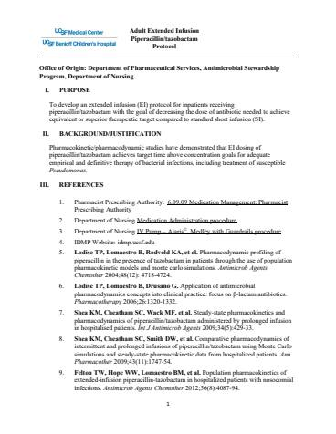

Guideline
Piperacillin-tazobactam Extended Infusion

Hosted on idmp.ucsf.edu, no login. 6 pages · 438 KB
Adult Extended Infusion Piperacillin/tazobactam Protocol
Quick Links:
Protocol
Procedures
Dosing
Common Y-site IV Incompatibilities
I. PURPOSE
To develop an extended infusion (EI) protocol for inpatients receiving piperacillin/tazobactam with the goal of decreasing the dose of antibiotic needed to achieve equivalent or superior therapeutic target compared to standard short infusion (SI).
II. BACKGROUND/JUSTIFICATION
Pharmacokinetic/pharmacodynamic studies have demonstrated that EI dosing of piperacillin/tazobactam achieves target time above concentration goals for adequate empirical and definitive therapy of bacterial infections, including treatment of susceptible Pseudomonas.
III. REFERENCES
- Pharmacist Prescribing Authority: 6.09.09 Medication Management: Pharmacist Prescribing Authority
- Department of Nursing Medication Administration procedure
- Department of Nursing IV Pump – Alaris© Medley with Guardrails procedure
- IDMP Website: idmpsbx.ucsfsitebuilder.acsitefactory.com
- Lodise TP, Lomaestro B, Rodvold KA, et al. Pharmacodynamic profiling of piperacillin in the presence of tazobactam in patients through the use of population pharmacokinetic models and monte carlo simulations. Antimicrob Agents Chemother 2004;48(12): 4718-4724.
- Lodise TP, Lomaestro B, Drusano G. Application of antimicrobial pharmacodynamics concepts into clinical practice: focus on β‐lactam antibiotics. Pharmacotherapy 2006;26:1320‐1332.
- Shea KM, Cheatham SC, Wack MF, et al. Steady‐state pharmacokinetics and pharmacodynamics of piperacillin/tazobactam administered by prolonged infusion in hospitalised patients. Int J Antimicrob Agents 2009;34(5):429‐33.
- Shea KM, Cheatham SC, Smith DW, et al. Comparative pharmacodynamics of intermittent and prolonged infusions of piperacillin/tazobactam using Monte Carlo simulations and steady‐state pharmacokinetic data from hospitalized patients. Ann Pharmacother 2009;43(11):1747‐54.
- Felton TW, Hope WW, Lomaestro BM, et al. Population pharmacokinetics of extended‐infusion piperacillin‐tazobactam in hospitalized patients with nosocomial infections. Antimicrob Agents Chemother 2012;56(8):4087‐94.
- Lodise TP, Lomaestro B, Drusano G. Piperacillin‐tazobactam for Pseudomonas aeruginosa infection: clinical implications of an extended‐infusion dosing strategy. Clin Infect Dis 2007;44(3):357‐63.
- Falagas ME, Tansarli GS, Ikawa K, et al. Clinical outcomes with extended or continuous versus short-term intravenous infusion of carbapenems and piperacillin/tazobactam: a systematic review and meta-analysis. Clin Infect Dis 2013;56:272-282.
- Lorente L, Jimenez A, Martin MM, et al. Clinical cure of ventilator-associated pneumona treated with piperacillin/tazobactam administered by continuous or intermittent infusion. Int J Antimicrob Agents 2009;33:464-8
- Dulhunty JM, Roberts JA, Davis JS, et al. A multicenter randomized trial of continuous versus intermittent beta-lactam infusion in severe sepsis. Am J Respir Crit Care Med 2015;192(11):1298-1305.
- Dulhunty JM, Roberts JA, Davis JS, et al. Continuous infusion of beta-lactam antibiotics in severe sepsis: a multi-center double-blind, randomized controlled trial. Clin Infect Dis 2013;56:236-244.
- Xamplas R, Itokazu G, Glowacki R, et al. Implementation of an extended-infusion piperacillin/tazobactam program at an urban teaching hospital. Am J Health Syst Pharm 2010;67:622–8.
- Patel N, Scheetz MH, Drusano GL, et al. Identification of optimal renal dosage adjustments for traditional and extended‐infusion piperacillin/tazobactam dosing regimens in hospitalized patients. Antimicrob Agents Chemother 2010;54(1): 460‐65.
- Trissel, LA. Handbook on Injectable Drugs16th Edition. Bethesda, Maryland: American Society of Health-System Pharmacist, 2011. Print
IV. PROTOCOL
- Inpatients being treated with piperacillin/tazobactam will receive EI unless the patient meets the exceptions stated below.
- Exclusion Criteria (These patients should receive piperacillin/tazobactam SI unless otherwise noted):
- Pediatric patients admitted to Benioff Children’s Hospital
- Patients with creatinine clearance of < 20ml/min, not on continuous renal replacement therapy (CRRT)
- Patients on intermittent hemodialysis (iHD). Note that patients on continuous renal replacement therapy should get EI dosing unless meeting other exclusion criteria.
- Patients with infection or colonization with gram-negative bacteria intermediate or resistant to piperacillin/tazobactam within the last 60 days
- Consult with Infectious Diseases or Antimicrobial Stewardship for consideration of alternative therapies.
- Patients with cystic fibrosis
- Patients stationed in the emergency department, operating room, peri-procedural areas, or post anesthesia care units
- Patients with insufficient intravenous access
V. PROCEDURES
- Definitions
- Extended intravenous infusion (EI): Infusion over 4 hours
- Short intravenous infusion (SI): Infusion over 30 minutes
- Continuous renal replacement therapy (CRRT)
- Intermittent Hemodialysis (iHD)
- Responsibilities
- Provider ordering
- Determine whether the patient is eligible for EI. For patients meeting exclusion criteria discussed in section IV, subsection b, piperacillin/tazobactam should be ordered as a SI with appropriate dosing selected for renal function. All other patients should get EI dosing.
- For patients ordered to receive EI, determine when the last dose of piperacillin/tazobactam was administered.
- Patients who have not received a dose of piperacillin/tazobactam SI within the past 6 hours should be ordered piperacillin/tazobactam EI with loading dose. Please consult with the ASP pharmacist if the patient previously received EI piperacillin/tazobactam.
- Patients who have received a dose of piperacillin/tazobactam SI within the past 6 hours should be ordered piperacilling/tazobactam EI without loading dose.
- Pharmacist Verification
- Review each order for appropriateness, including but not limited to:
- Allergies
- Indication
- Site of infection
- Suspected pathogens
- Drug compatibilities
- Timing of administration
- Replace SI orders with EI orders, unless patient meets exclusion criteria outlined in Section IV, Subsection b.
- Replace EI orders with SI orders, as outlined in Section VI for patients meeting exclusion criteria outlined in Section IV, Subsection b.
- Assess need for loading dose of piperacillin/tazobactam based on last piperacillin/tazobactam administration time.
- Patients who have not received a dose of piperacillin/tazobactam SI within 6 hours: order a piperacillin/tazobactam loading dose as outlined in Section VI, if not already ordered by the provider. If assistance is needed, consult the Antimicrobial Stewardship Program pharmacist.
- Patients who have received a dose of piperacillin/tazobactam SI within 6 hours: no loading dose is needed. Cancel the loading dose if ordered by the provider.
- Adjust timing of piperacillin/tazobactam, depending on when the last dose, if any, was administered.
- Adjust timing of piperacillin/tazobactam with vancomycin and other IV medications to avoid compatibility issues, if applicable. See Appendix I.
- Review each order for appropriateness, including but not limited to:
- Nursing Administration
- Administer medication following the Medication Administration and IV pump Alaris Medley with Guardrails nursing procedures.
- To administer a STAT IV medication that is incompatible with piperacillin/tazobactam, stop EI piperacillin/tazobactam, flush the line, and administer the STAT IV medication. Then, resume EI piperacillin/tazobactam.
- Provider ordering
VI. DOSING RECOMMENDATIONS
| Extended Infusion ( 4 hour infusion) in 100ml 0.9% NaCl | |
|---|---|
| CrCl > 20 ml/min or CRRT | |
| Loading Dose (LD), if indicated | 4.5 gm IV over 30 min x 1 |
| Maintenance Dose (starting immediately after loading dose) | 4.5 gm IV over 4 hr q8h |
| Short infusion (30-minute infusion) in 100 ml 0.9% NaCl | ||||
|---|---|---|---|---|
CrCl ≥ 50 ml/min | CrCl 10-50 ml/min | CrCl < 10 ml/min | Dialysis (HD or CRRT) | |
| Non-Pseudomonas infections | 3.375 gm IV Q6h | 3.375 gm IV Q6-8h | 2.25 gm IV Q8h | HD: 2.25 gm IVq8h CRRT: 4.5 gm IV Q8h or 3.375 gm IV Q6h |
Exclusion criteria for EXTENDED INFUSION: resistant or intermediate susceptibility organism, cystic fibrosis, peri-procedural areas, insufficient IV access
2016: Original protocol prepared by: Kathy Yang, PharmD, MPH
2024 revision prepared by:
Kathy Yang, PharmD, MPH
Ripal Jariwala, PharmD, BCIDP
Emily Kaip, PharmD, BCIDP, BCPS
Approved by:
| Group | Date |
|---|---|
| IDMP | 2016 |
| UCSF P&T | 2016 |
| IDMP | 2022 |
| UCSF P&T | 02/08/2023 |
APPENDIX I: Common Y-site IV incompatibilitiesa
| Known incompatible agents | Acyclovir Amiodarone HCL Amphotericin B (cholesteryl and conventional colloidal) Caspofungin Chlorpromazine Ciprofloxacin Cisplatin Daunorubicin Decarbazine Dobutamine Doxorubicin Doxycycline Droperidol Diltiazem Famotidine | Ganciclovir Gemcitabine Haloperidol Hydralazine Hydroxyzine Idarubicin Insulin regular Levofloxacin Mitomycin Mitoxantrone Minocycline Nalbuphine Phenytoin Prochlorperazine Promethazine Tobramycinb |
| Variable compatibility | Azithromycin Cisatracurium Gentamicinb Pantoprazole Vancomycinc |
a List is not comprehensive. Refer to Micromedex or LexiComp for more compatibility information.
b Avoid mixing aminoglycosides & penicillin in the same bag and avoid infusing concurrently through same line.
c Compatibility of vancomycin and piperacillin/tazobactam is concentration and formulation dependent. Avoid infusing vancomycin and piperacillin/tazobactam through the same lumen concurrently if possible (i.e. administer vancomycin and piperacillin/tazobactam infusion through separate lumens or administer vancomycin prior to the piperacillin/tazobactam 4-hour infusion). For additional information or clarification, call inpatient pharmacy.